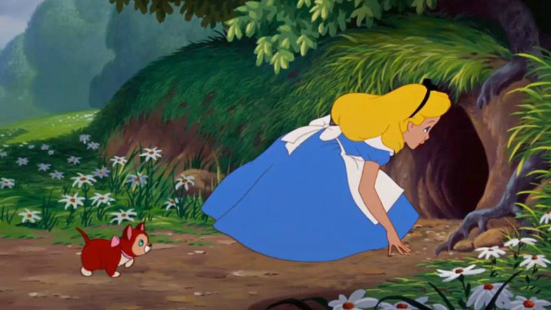
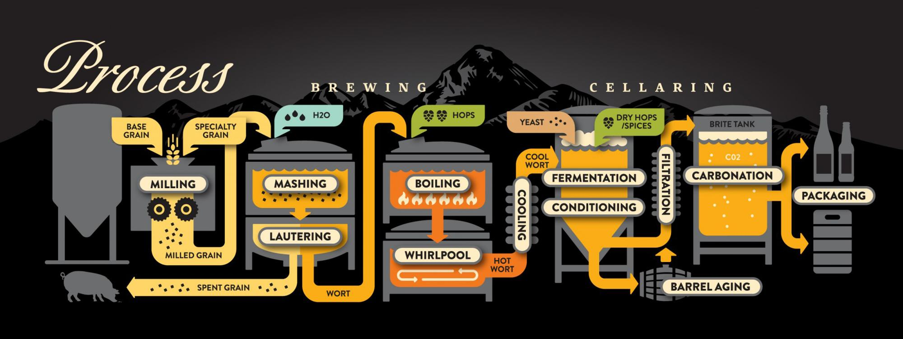

Beertasting 2021
30.10.2021
WLAN
Toilette
Essen
Manuela Harms
MH Genusserlebnis
Diplom Biersommiliere
Bierbotschafterin(IHK)
Candidat Master of Beer
https://untappd.com/user/dirksiemers

Hinunter in den Kaninchenbau
Mit allen Sinnen trinken
Sehen, Riechen, Schmecken.
Sehen
Farbspektrum
Bierklarheit
Bierschaum
Riechen
Leicht Schwenken und mit offenen Mund schnüffeln
Schmecken
Antrunk
Haupttrunk
Nachtrunk
Kona Big Wave

| Biertyp: | Golden Ale / Blond Ale |
| Alkohol Vol: | 4,4% |
| Stammwürze/Plato: | 10.3° |
| Bittereinheiten/IBU: | 21 |
| Malz: | Pale 2 Row Premium, Caramel 20 |
| Hefe: | k.A. |
| Hopfen: | Galaxy, Citra |
| Zutaten: | Wasser, Weizenmalz, Karamellmalz, Hopfen, Hefe |
Was ist im Bier?
Wasser, Malz, Hopfen, Hefe.
Persische Weisheit
“Wenn Du einen Freund hast, dann gib ihm ein Bier aus. Wenn Du ihn wirklich liebst, dann lehre ihn das Brauen.”
So braut man Bier
Schroten, Maischen, Läutern, Würzekochen, Klärung, Kühlung, Gärung, Lagerung, Filtrieren, Abfüllung
Camba Jager Weisse

| Biertyp: | Dry Hop Wheat |
| Alkohol Vol: | 5,2% |
| Stammwürze/Plato: | 12,5° |
| Bittereinheiten/IBU: | 29 |
| Malz: | Weizen, Pilsner, Münchner |
| Hefe: | Bayerische Weissbierhefe |
| Hopfen: | Simcoe, Hersbrucker, Tradition, Chinook |
| Zutaten: | Wasser, Weizenmalz, Gerstenmalz, Hopfen, Hefe |
Wasser, Malz, Hopfen, Hefe.
Hopfen
Geschmackgeber mit haltbarmachenden Zusatzeffekt
Enger Verwandter vom Canabis
Ätherischen Öle und Bitterstoffe der Harze
Hoher Anteil an Ölen = Aromahopfen
Alphasäuren bringen das Bittere (IBU)
Malz
Gerste, Weizen, Roggen, Hafer oder auch Reis
Weichen, Keimen, Darren, Entkeimen
je dunkler das Malz, desto dunkeler das Bier
Hefe
Ohne Hefe keine Gärung, ohne Gärung kein Bier
Öbergärig und Untergärig
Hundertausend Hefearten, 200 für Bier genutzt
Sorgen auch für Geschmack (Ester und Phenole)
Rogue Beard Beer (John Maier)
Brauwasser
Calcium, Eisen, Magnesium, Kalium, Natrium und Chlorid
Weiches Wasser für Pils
Härteres Wasser für Weizen / Stout
BrewDog Punk IPA

| Biertyp: | India Pal Ale |
| Alkohol Vol: | 5,4% |
| Stammwürze/Plato: | 12,5° |
| Bittereinheiten/IBU: | 35 |
| Malz: | Caramalz, Extra Pale Ale |
| Hefe: | k.A. |
| Hopfen: | Ahtanum, Amarillo, Cascade, Chinook, Nelson Sauvin, Simcoe |
| Zutaten: | Wasser, Gerstenmalz, Hopfen, Hefe |
Was gibt es denn nun alles für Biere?
Obergärige Biere (Ales)
Untergärige Biere (Lager)
Spontan vergorene Biere (Lambic)
Craft Beer - Was ist das?
Rettung aus den USA
Einwanderungsland
Prohibition in den Zwanzigern
90 Brauereien in den Achzigern
Aufhebung des Heimbrau-Verbots 1978 (Jimmy Carter)
Aktuell über 5000 Brauereien
Hopfenreiter 2021

| Biertyp: | Double IPA |
| Alkohol Vol: | 8,5% |
| Stammwürze/Plato: | 18,8° |
| Bittereinheiten/IBU: | 70 |
| Malz: | Gerstenmalz |
| Hefe: | k.A. |
| Hopfen: | Galaxy,Sabro,Enigma,Idaho 7,Southern Passion,HVG Zuchtsorte 4 |
| Zutaten: | Wasser, Gerstenmalz, Hopfen, Hefe |
Kurioses ums Bier
Kastenlauf
Beercycling
Beerpong
Lütje Lage
Bier-Pipeline
Wacken Einherjer Sold Barley Wine

| Biertyp: | Barley Wine |
| Alkohol Vol: | 9,5% |
| Stammwürze/Plato: | 24° |
| Bittereinheiten/IBU: | ca. 35 |
| Malz: | Gerstenmalz |
| Hefe: | Bayerische Weissbierhefe |
| Hopfen: | k.A. |
| Zutaten: | Wasser, Gerstenmalz, Hopfen, Zucker, Hefe |
Riedenburger Dolden Dark

| Biertyp: | Porter |
| Alkohol Vol: | 6,9% |
| Stammwürze/Plato: | 17° |
| Bittereinheiten/IBU: | 28 |
| Malz: | Gerstenmalz, Emmermalz |
| Hefe: | englische Ale-Hefe |
| Hopfen: | Aromahopfen |
| Zutaten: | Wasser, Gerstenmalz, Emmermalz, Hopfen, Hefe |
Maximilian Krieger vom Riedenburger Brauhaus
Biermischgetränke
Pils mit Zitronenlimonade: Alster, Radler
Pils mit Cola: Diesel, Schmutz.
Pils mit Wasser: BMW
Altbier mit Cola: Herforder, Krefelder.
Weizenbier mit Cola: Flieger
Schwarzbier mit Champagner: Black Valvet / Bismarck